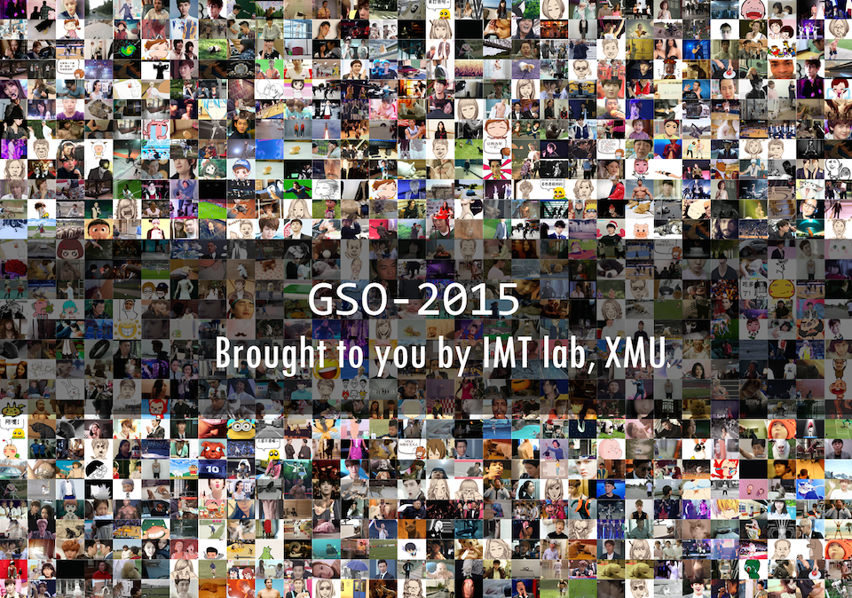
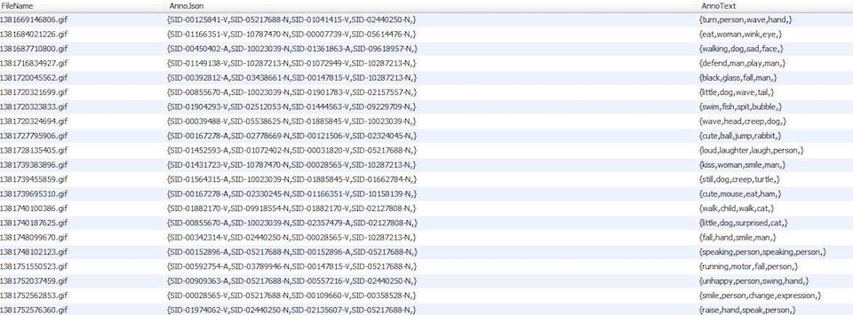
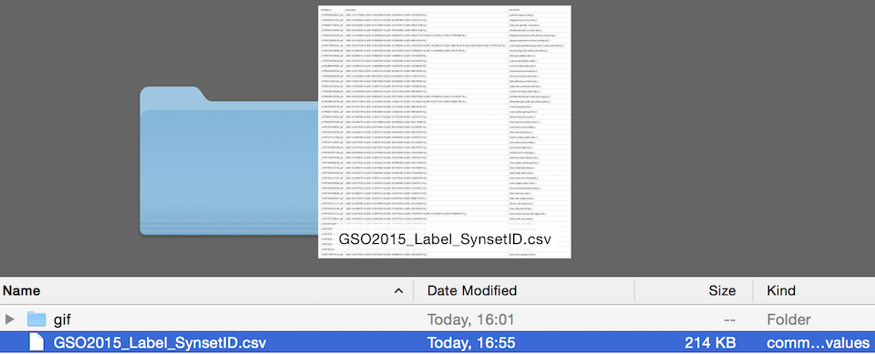

We built a new GIF video dataset from one of the most popular micro-blog provider. All the GIF videos were posted by online users and were collected automatically. We built 40,000+ distinct candidates. These candidates were then manually labeled in the fashion of GIF Sentiment Ontology. This work is possible owing to the crowd intelligence. We recruited 7 workers. Each worker was shown one GIF video and was expected to accomplish two "tasks". "Task 1" is to depict the given GIF using SentiPair Sequence. To be more specific, for each GIF, SentiPairs were chosen by the worker. And each SentiPair consists either of an adjective and a noun (ANP) or a verb and a noun (VNP). Figure 4 illustrates the flow of SentiPairs and the corresponding GIF. In "Task 2" workers were expected to give the image an overall sentiment judgment (Positive/Negative/Neutral/Can't Judge).

In GSO-2015, each GIF video comes with a sequence of SentiPairs and an overall sentiment judgment. The GIF video itself is stored in the gif directory while SentiPairs are stored in the format of JSON.


GSO-2015 Dataset contains a sub-directory gif and a csv file which is the annotation.